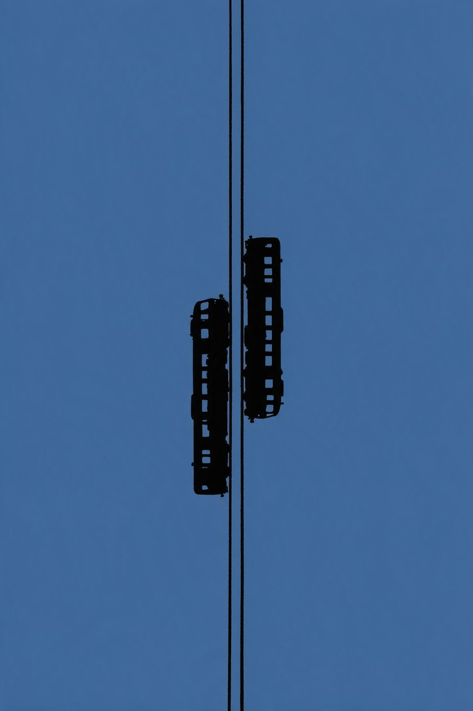
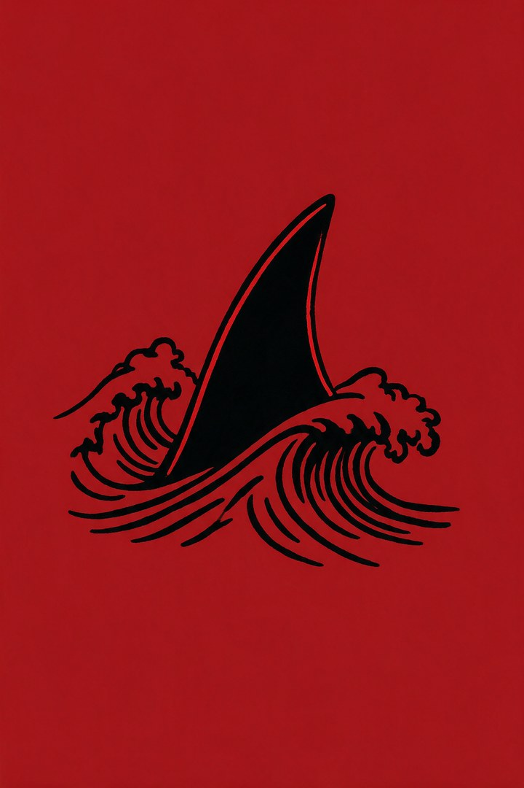
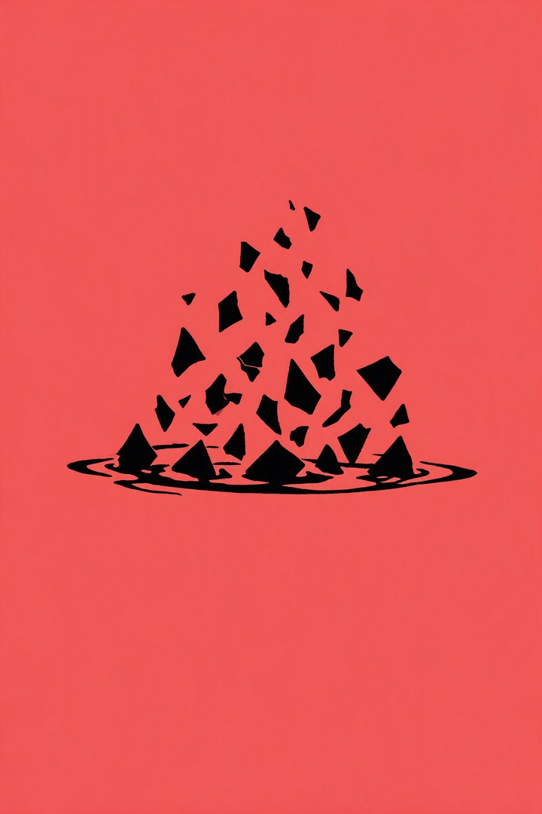
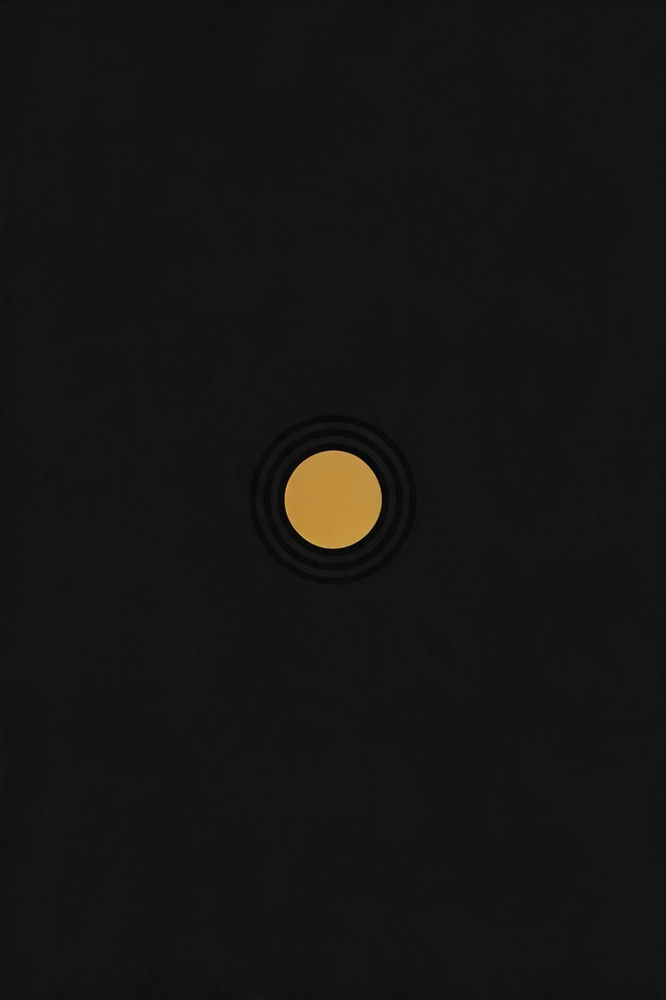
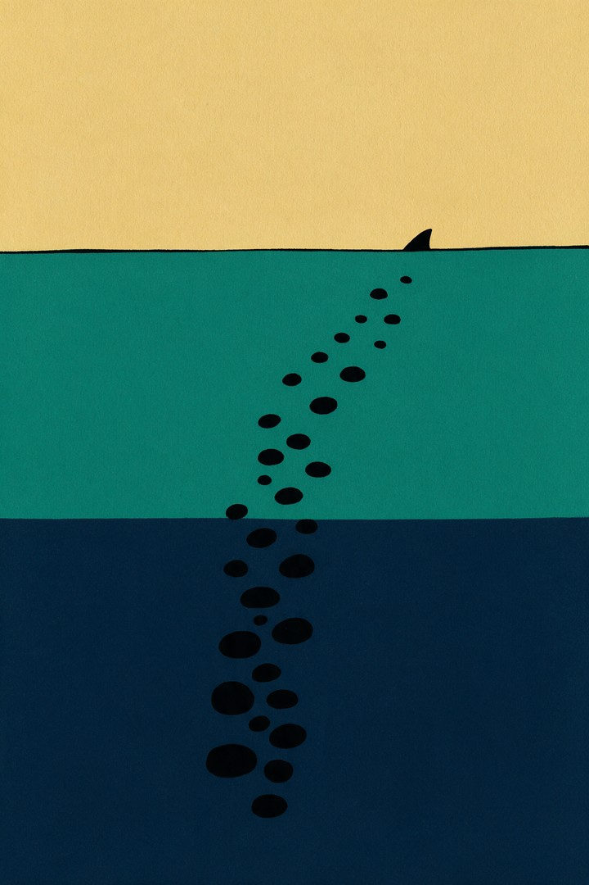
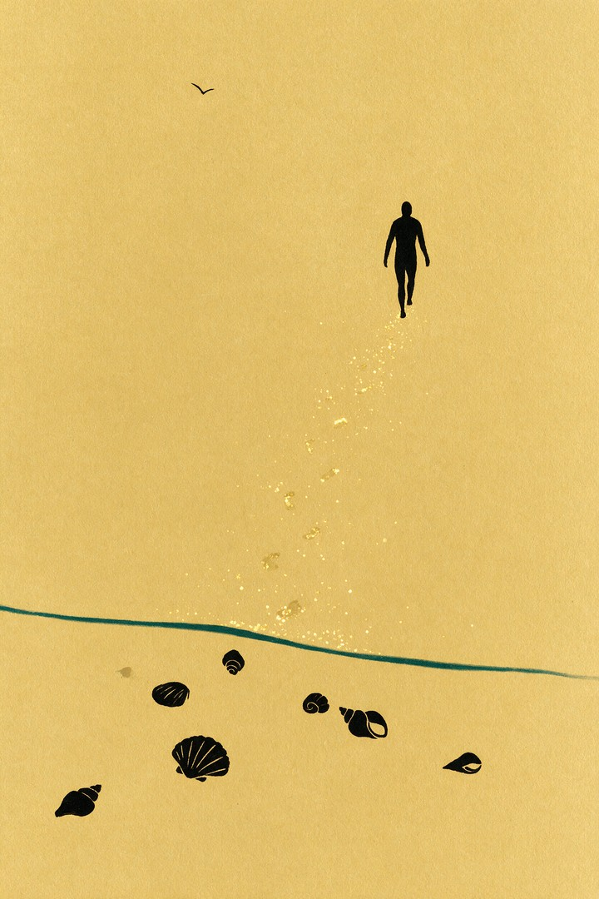

Verse 1 · 黄
冰冷的温存
透过冰块去猜答案。表面是暖的，触感是冷的。
透过芝华士的冰块
仔细地猜
明天不确定的答案
将我掩埋
准备好面对别离
才敢把昨夜
压在行李箱底
捏碎在化不开的暖意和渐凉的呼吸里
Verse 1 · 黄
透过冰块去猜答案。表面是暖的，触感是冷的。

Pre-Chorus · 蓝
两列车对开。一秒交错，各自奔赴各自的一天。

Chorus · 红
鱼鳍划破平静。看见危险，还是一步步进。

Verse 3 · 粉
上一幕我才是那把刀。这一幕，我只是诱饵。

Bridge · 黑
不是从你的嘴里逃。是从一直被淹没的梦里醒来。

Chorus · 绿
鱼鳍沉入海底，我挣脱离开。一层一层蓝绿，渐渐找回呼吸。

Outro · 金
潮退后母贝留岸；脚印又随近，人走在光里。
Credits
R&B · 独立 EP《鲨鱼》